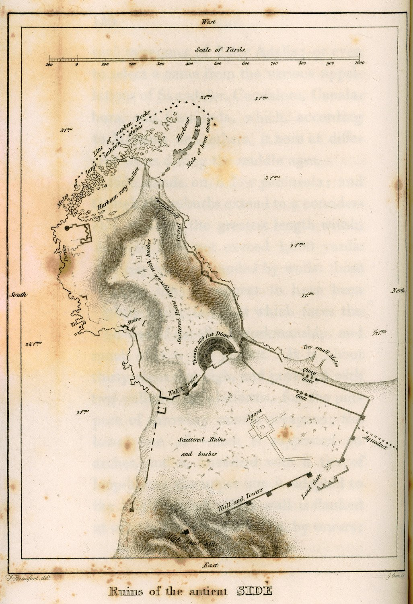

ⓘ
ⓘシデは細長い半島に築かれ、今では古代遺跡と現代のリゾート地が共存する特別な場所です。その名は現地の言葉で「ザクロ」を意味すると考えられています。古代の重要な交易港であり、丘の斜面ではなく主にアーチ構造の上に築かれた大きな劇場がそびえます。半島の先端では、海に面したアポロンとアテナの神殿の円柱が、地中海で最も多く撮影される夕日の風景をつくり出しています。
⏳ 時間旅行
| 当時 | 今日 |
|---|---|
| 海に突き出た細い半島に築かれた港町 | 半島の上にある海辺の町 |
| 町の名は現地の言葉で「ザクロ」を意味すると考えられている | 果物の名を持つ町 |
| 重要な交易港 | 貨物と旅客でにぎわう港 |
| 劇場：斜面ではなくアーチの基礎の上に建てられた | 平地に高く組まれたスタジアムの観客席 |
| 半島の先端に立つアポロン神殿とアテナ神殿 | 灯台のように遠くから見える目印 |
| 市門、アゴラ、浴場、列柱通り | 今はリゾートの町並みと溶け合う旧市街 |
🎧 シデの一日
西暦170年。船で近づくと、まず半島の先で海を向いて立つ神殿の柱が見えます。港では荷が降ろされ、商人たちが値段の交渉をしています。
市門をくぐって列柱通りを歩きます。アゴラでは布やオリーブ油、ワインが売られ、人混みからさまざまな言葉が聞こえてきます。
午後はアーチの上にそびえる劇場へ。夕方には神殿まで下りて、太陽が海に沈むのを眺めます。
今では遺跡とリゾートの町が同じ半島に共存しています。倒れたアポロン神殿の柱の一部は再び建てられ、夕日は今も同じ場所から眺められています。
数値は推定で、資料によって異なります。図は説明用で、縮尺どおりではありません。
遺跡平面図

平面図: Francis Beaufort · Public domain · Wikimedia Commons
これは歴史的な図面で、現在の発掘状況とは異なる場合があります。
よくある質問
シデ遺跡はどこにありますか？
シデ遺跡はManavgat, アンタルヤ（地中海地方）にあります。行き方はこのページの地図または経路ボタンをご利用ください。
シデ遺跡の見学にはどのくらい時間がかかりますか？
平均見学時間：1.5〜3時間。
シデ遺跡でミュージアムパスは使えますか？
文化観光省が管理する博物館・遺跡で通常利用できます.
シデ遺跡はどの時代のものですか？
シデ遺跡はヘレニズム / ローマの時代のものです。
シデ遺跡の近くには他に何がありますか？
近くの文化スポット：シデ博物館 (~1 km), マナヴガットの滝 (~8 km), セレウケイア（パンフィリア）古代都市 (~14 km)。
シデ遺跡に音声ガイドはありますか？
はい。このページの「聴く」ボタンで、日本語を含む8か国語で紹介を聴くことができます。
♿ バリアフリー情報
この場所の確認済みバリアフリー情報はまだありません。来訪者や博物館から情報を集め、確認後にここに掲載します。
文化観光省が管理する博物館と遺跡では、障害のある方と付き添いの方1名は、証明書を提示すると無料で入場できます。訪問前に最新の条件をご確認ください。 バリアフリーガイド →
♿ バリアフリー情報を送る
関連ガイド
写真
周辺の宿泊施設とレストラン
あなたのお店をここに掲載しませんか？ 広告掲載